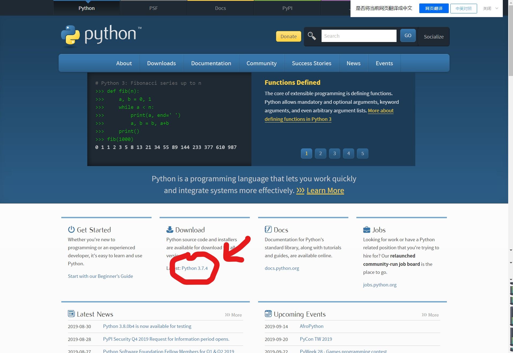
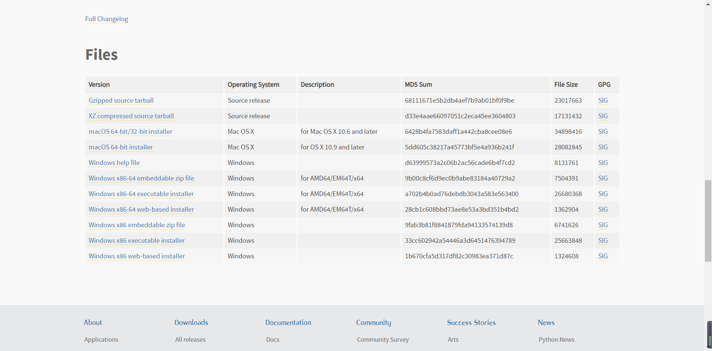
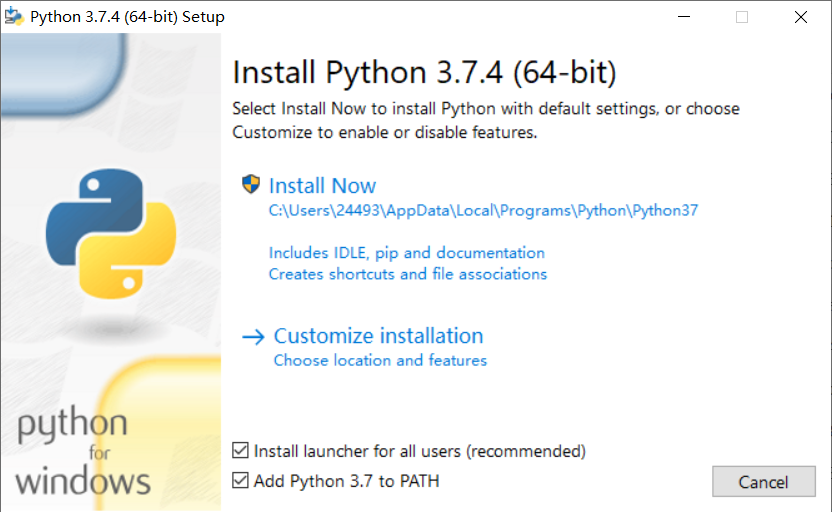
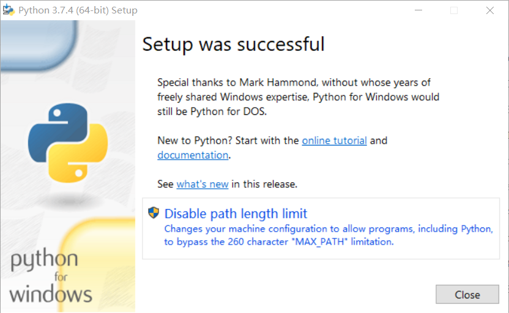
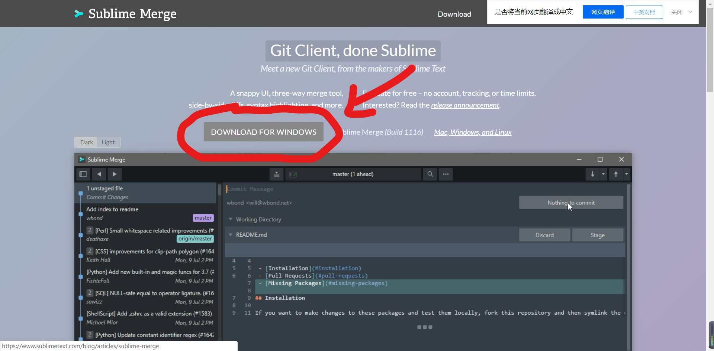
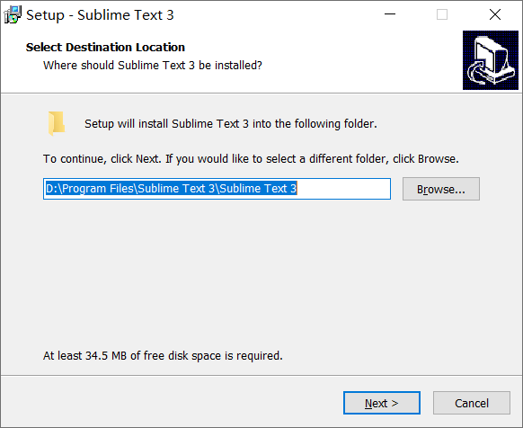
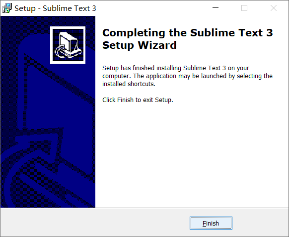

Python安装
安装python可以去https://www.python.org官网下载
点开官网后点击下图我圈出来的地方

然后翻到页面最后，选择要安装的版本

点击下载后打开，将 Add Python 3.7 to PATH 打上勾，点击 Install Now

最后就安装好了

Sublime安装
安装Sublime可以去 https://www.sublimemerge.com 官网下载
点开官网后点击下图我圈出来的地方直接下载安装

设置安装位置，我建议不要安装在C盘，以防C盘东西太多造成电脑卡顿，这里我习惯安装在D盘，但是Python可以安装在C盘，运行时快一点，设置完成后一直点下一步就可以了

安装成功
